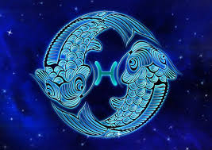

Məlumatlar
Zodyakın sonuncu bürcü olan balıqlar 19 fevral-20mart tarixləri arasında doğulurlar. Bürcün elementi sudur, planeti Yupiter, rəngi ağ və bənövşəyi, daşı ay daşı, günü çərşənbədir.
Karakteristikalar
- Həssas
- Vicdanlı
- Sənətkar
- Xeyirxah
Maraqlı Məlumatlar
Balıqların fəallığı reaktivdir; başqa sözlə, onlar yalnız yaranan effektə cavab olaraq hərəkət edirlər və heç vaxt ilk addımı atmırlar. Yüksək kövrəklikləri onları emosional cəhətdən çox yaralı insan edir.